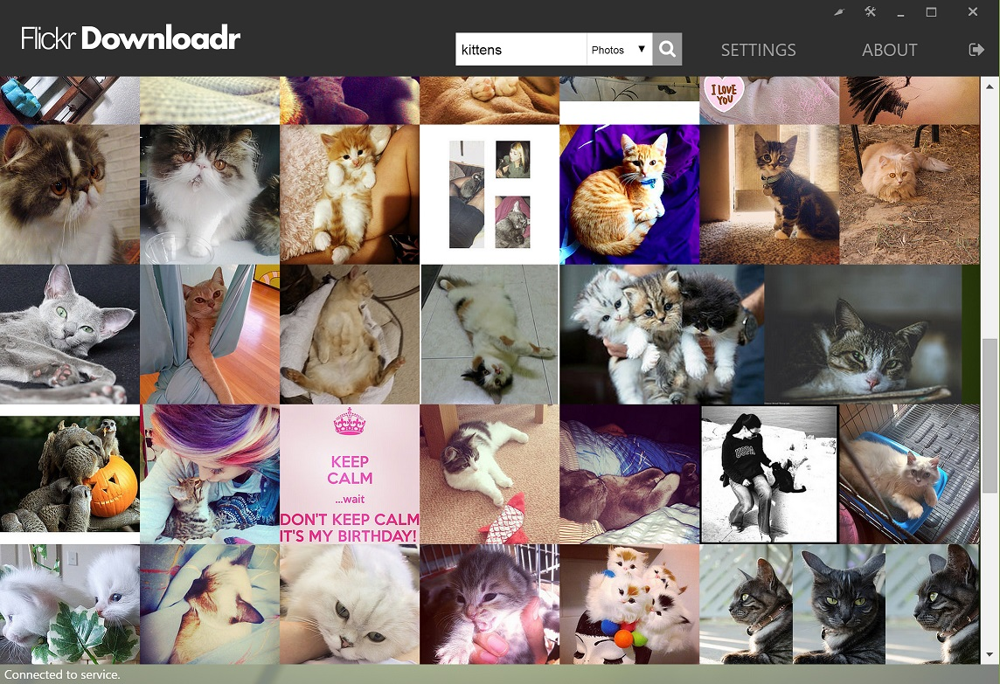

Photo downloading tool for the Flickr.com photo service. This application will make it easy to download any photo to your local computer. Soon to be available on Chrome Web Store and compatible with Windows, Mac, Linux and Chrome OS.



Flickr Downloadr is built and provided by brain.no.